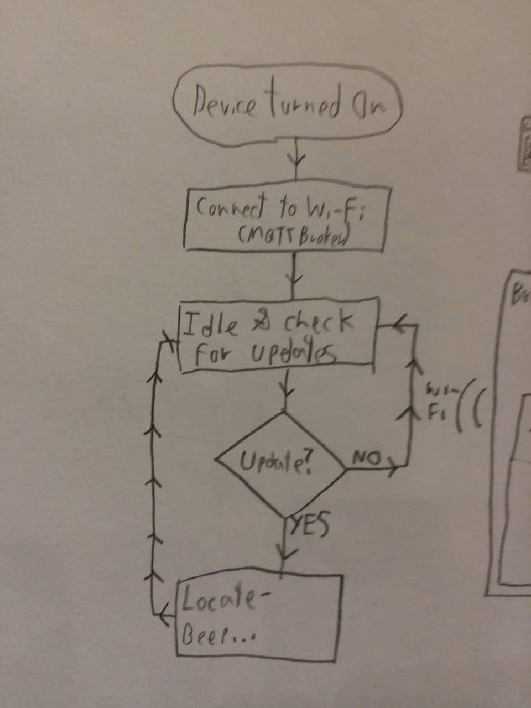
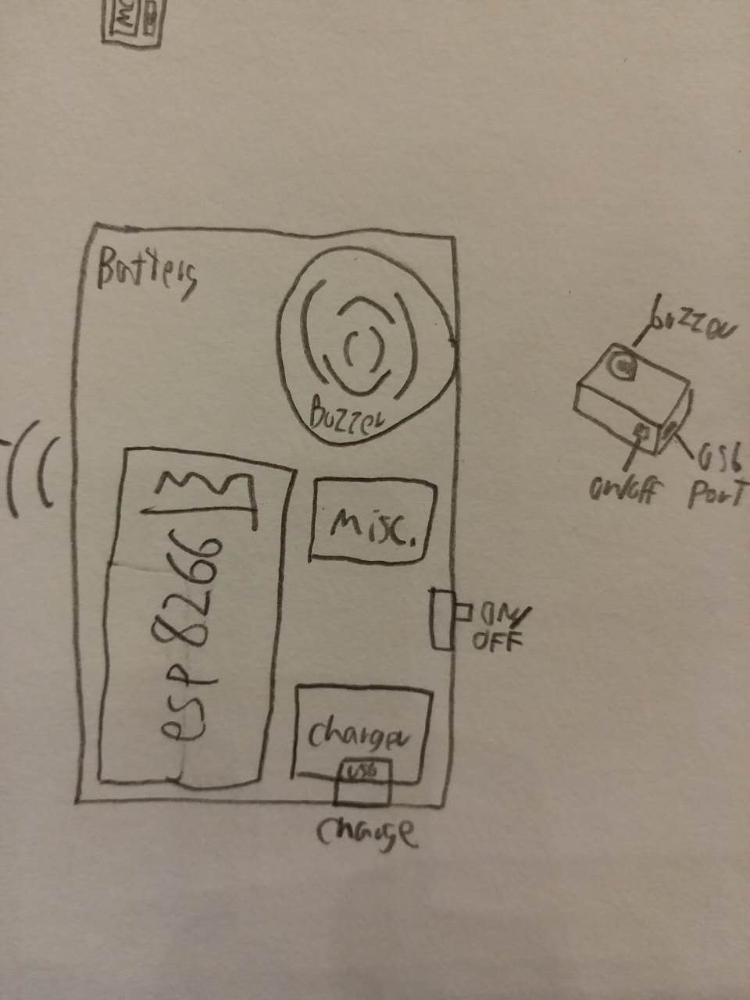
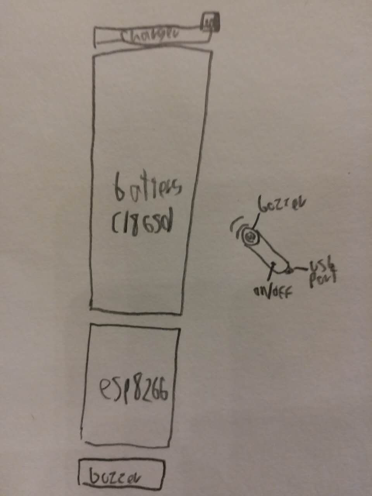
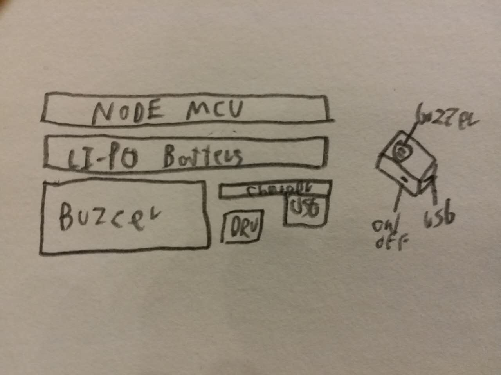
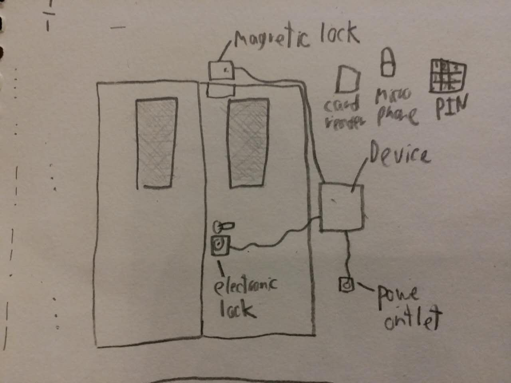
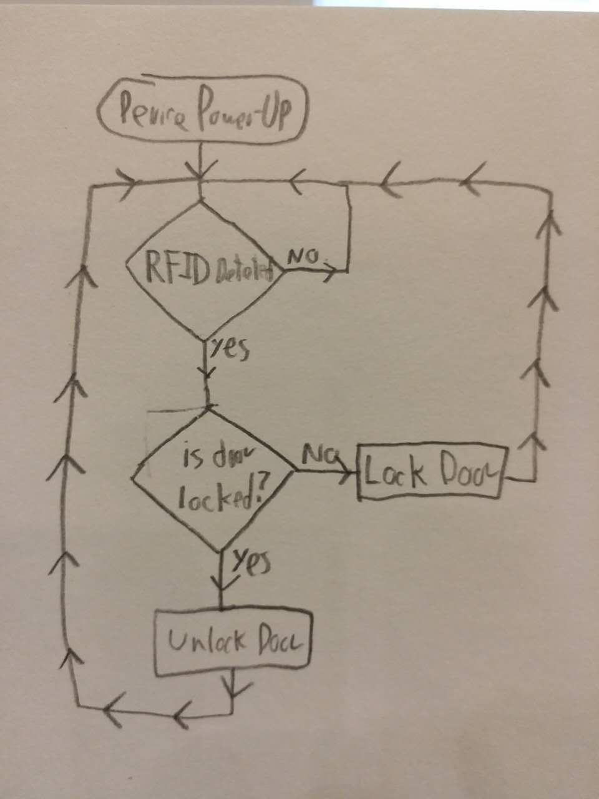
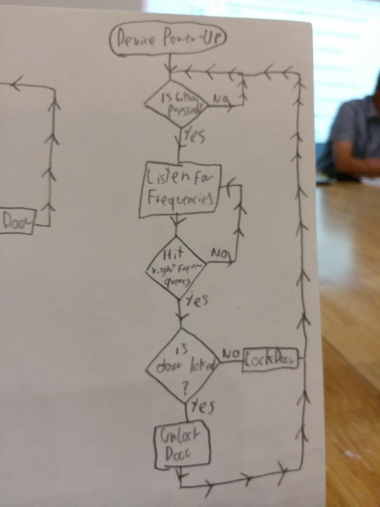
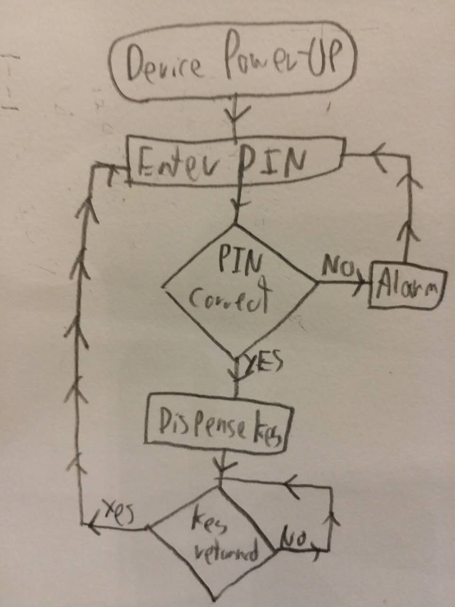

Design Journal
Semester 1 (2017)
Inquiring and Analysing
| Problem: |
|---|
|
In Music the keys to the storage rooms are always being lost. There is no right place for the keys, furthermore students can just take the keys and often don't return them. Keys are not tracked. |
|
This issue needs to be resolved, because a lot of time is lost. When an instrument is needed, but the keys are gone time is wasted to get the keys, instead of used to play the instruments. If this problem is not fixed, music classes will continue to be slow, due to the time to get instruments. |
| Concept: |
| My concept is some sort of tracking device, the could be remotely called. |
| Approach: |
| Will most likely be made out of wood or acylic, needs to be small and it has to have a long battery life. |
| Client: |
| Ms.Keus, can serve other people after development. |
| Priority | Research Question | Importance | Primary/Secondary | Results |
|---|---|---|---|---|
| 1 | How can a remote object communicate? | This is the key difference. The keys can't just tell the owner where they are, my device needs to be able to do that. There needs to be a way for my device to communicate it's location back to the owner, it's the first essential piece. | Secondary | I found out that it needs to be radio-communication; and within that there are certain possibilities: Wi-Fi, Lo-Ra, Bluetooth, GSM(Cellular) or Propiertry RF Link. |
| 2 | How can a remote object be located? | This is the second key piece. My device needs to be able to know it's location, so that it can be transmitted to the owner, and the owner can then find it. | Secondary | There are multiple ways of locating objects, they include sound, light and GPS. The more that are implemented the better. |
| 3 | How can a device be optimised to consume less power? | My device needs consume little power. A remote locator needs to last for a long time on one charge. What is the point of having this locator when it's batteries are always discharged? | Secondary | I found out that the main way to optimise power consuption, is to have a 'sleep' mode where the device completly powersdown and only waits for activation, and a 'action' mode where the device is turned on and performs it's function, only to then return to sleep. |
| 4 | How can this device be "easy to use"? | The interface for this device needs to be quick and simple to use, if it gets too complicated, it might be worth the time just to go looking for the keys manually. | Secondary | I found out some tips for designing a user interface, it needs to be clear where the actions are. Anyone should be able to use it, without any prior expirience or a manual to read. It will most probably be in the form of a website. |
| Product | Features (Pros) | Cons | Notes | |
|---|---|---|---|---|
| Tile |  |
Range of 30 meters Can beep Shows last seen location on map |
Does not transmit location | You can also use it in reverse, press it to make your phone beep. |
| Lapa |  |
Range of 60m meters Can beep and light up Shows last seen location on map |
Does not transmit location | You can also use it in reverse, press it to make your phone beep. |
| Mynt |  |
Range of 50 meters Can beep Uses 'Crowd GPS' to locate Waterproof |
Needs a 'crowd' of users to be able to locate. |
Also a remote shutter. |
| Brief |
|---|
| I will design, make and develop a remote keyfinder, for Ms.Keus to find the keys to the storage room easily. It must be able to remotely communicate, locate itself, conserve power in order to last a long time and be easy to use. It needs to perform these functions to be better than commercially available products, and to be more effective than manually looking for keys. It will do these functions through radio-communication, sound, light and other means. The only requirement to where it will work, is that it must work whithin the school. |
| Research Summary |
| From reaserch of radio-communications, I found out that there are several ways to establish a network using relatively low power. However the most practical way seems to be by using Wi-Fi, as most of the infrastructure is already there. |
| As for location, the most accurate way to do it would be to add GPS capabilities to my product, but that may be overkill. There are simpler ways, such as emitting sound and light; and then aiding a person to find it. |
| My product must last long, so I will need to include a powersource with a high capacity, and I will need to optimise my products power consumption by using 'sleep' and 'run' modes. |
| As for the user interface, I will need to make it as simple as posible to use. It will be a website, that can be logged onto from anywhere, and the be used to activate my device. |
| Alternatives |
| Alternatively another system could be implemanted, even 'keyless' systems, like maybe a keycard reading system that unlocks the door. Or even a cardless entry. A good idea would be a sing C# to open the door. |
Developing Ideas
| Key-System Specifications | Keyless-System Specifications |
|---|---|
|
|
|
|
|
|
|
|
|
|
|
|
|
|
|
|
| Key-System | |||||
|---|---|---|---|---|---|
|  | |||||
|
Idea |
Description |
Picture |
Pros |
Cons |
Points |
|
Box |
A remotely activated key locator. |
 |
|
|
6 |
|
Cylinder |
 |
|
|
7 |
|
|
Compact as Possible |
 |
|
|
7 |
|
| Winner is 'Compact As Possible'.(Ms.Keus Approved! And she want's it to play the Dr.Who Theme) | With | 7 Points | |||
| Keyless-System | |||||
|  | |||||
|
Idea |
Description |
Picture |
Pros |
Cons |
Points |
|
RFID Reader |
Scan a lunchcard to lock/unlock door. |
 |
|
|
6 |
|
Frequency Analyzer |
Listen and analyze singing, if you hit the right note. Lock/unlock the door. |
 |
|
|
5 |
|
PIN Code |
Enter a PIN to lock/unlock door. |
 |
|
|
6 |
| Winner is 'PIN Code'. (Ms.Keus prefers the keyfinder, it is more diverse and won't look as ugly as this. xD) | With | 6 Points | |||
| Circuit Diagrams (Schematics) | |||||||||||||||||||||||||||||||||||||||||||||||||||||||||||||||||||||||||||||||||||
|---|---|---|---|---|---|---|---|---|---|---|---|---|---|---|---|---|---|---|---|---|---|---|---|---|---|---|---|---|---|---|---|---|---|---|---|---|---|---|---|---|---|---|---|---|---|---|---|---|---|---|---|---|---|---|---|---|---|---|---|---|---|---|---|---|---|---|---|---|---|---|---|---|---|---|---|---|---|---|---|---|---|---|---|
|
|
|||||||||||||||||||||||||||||||||||||||||||||||||||||||||||||||||||||||||||||||||||
|
|
|||||||||||||||||||||||||||||||||||||||||||||||||||||||||||||||||||||||||||||||||||
|
|
|||||||||||||||||||||||||||||||||||||||||||||||||||||||||||||||||||||||||||||||||||
|
|
|||||||||||||||||||||||||||||||||||||||||||||||||||||||||||||||||||||||||||||||||||
| CID | Name | Price | Link | Units | Notes |
|---|---|---|---|---|---|
| U1-A | Node MCU Module | CN¥ 19.50 | Taobao | 1 units | This will be used to quickly develop and prototype |
| U1-B | ESP-12E Module | CN¥ 23.00 | Taobao | 2 units | This is a much smaller version for the final product |
| U2 | GPS Module (ATGM336H) | CN¥ 43.00 | Taobao | 1 unit | Tiny, but expensive. Hopefully functional |
| B1 | Li-Po Battery (500mAh) | CN¥ 39.6 | Taobao | 2 unit | Hopefully this does not catch fire and blow up. Better get two just in case. |
| M1 | TP4056 LIPO Charger Module | CN¥ 5.60 | Taobao | 4 units | Hopefully this protects the batteries. |
| SP1 | Buzzer (Crystal) | CN¥ 1.60 | Taobao | 8 units | This should be able to play the Dr.Who theme. |
| SP2 | Buzzer (Oscillator) | CN¥ 4.00 | Taobao | 8 units | This can only do a monotone beep, but it could be louder. |
| U3 | 3.3V Regulator (HT7333-A) | CN¥ 6.00 | Taobao | 20 units | Hopefully Taobao will ship such a small quantity |
| D1 | LEDs (Super-Bright White) | CN¥ 6.00 | Taobao | 40 units | Hopefully Taobao will ship such a small quantity |
| BOX1 | Project Box | CN¥ 12.90 | Taobao | 2 units (smallest) | In an emergency, if I run out of time to build an enclojure. Stuff it in the box. |
| Total Price: | CN¥ 161.20 | ||||
| I have omitted simple componenets, as I already own most of them at home. I've decided to just use them. | |||||
| If all goes to plan, with no parts smoking, going on fire or blowing up. I should be able to build a GPS Tracker and a PID Button | |||||
Creating the Solution
| Step | What needs to be done | Progress |
|---|---|---|
| 1 | Gather all materials | |
| 2 | Test Node MCU Module | |
| 3 | Test GPS Module (Generate Google Maps link) | |
| 4 | Test MQTT (from Adafruit.io) | |
| 5 | Prototype everything on breadboard | |
| 6 | Get MQTT updates working | |
| 7 | Get MQTT location working | |
| 8 | Program locate response | |
| 9 | Test/Debug everything | |
| 10 | Prototype Power Supply | |
| 11 | Test Power Supply | |
| 12 | Build into encloujoure | |
| 13 | Configure OTA Updates | |
| 14 | Make interface Ms.Keus friendly, Reconfigurable | |
| 15 | Debug | |
| 16 | Make final codde OpenSource and release on GitHub | |
| 17 | Make instructions on Instructables | |
| 18 | Demonstrate and give to client |

{kind=link}
{kind=link}
{kind=link}
{kind=link}
{kind=link}
{kind=link}
{kind=link}
{kind=link}
{kind=link}
{kind=link}
{kind=link}
{kind=link}
| Date | What I plan to do | What I did | Problems | Progress |
|---|---|---|---|---|
| 16.10.17 | Make a Logical Plan | I made a Logical Plan | none :) | I made an ordered plan on what i need to do to develop my product |
| 17.10.17 | "Follow Logical Plan - Test Node MCU module - Prototype on bread board" | I prototyped on a breadboard and tested the Node MCU Module | none :) | I prototyped everything on a bread board and was able to program the module |
| 18.11.17 | "Follow Logical Plan - Prototype on bread board - Implement ringtone" | I got the DW Theme ringtone to play successfully. | Had to find an alternative to Tone() and had to find a single track midi. | I found a midi and was able to get it to play, but it does not sound very good… |
| 1.11.17 | "Follow Logical Plan - Connect to the internet" | I failed to connect it to the internet | The school wifi is WPA2 Enterprise the module only supports WPA2 | The module cannot connect to ‘MYP Student’ wifi, i have to find an alternative |
| 6.11.17 | "Follow Logical Plan - Connect to MQTT Broker" | I tried to connect to “Very Important Parent” and crashed the wifi | “Very Important Parent” requires a log-in token, I ignored that and crashed the wifi. | I went to ask IT if they could set up a hotspot just for me, but that is not possible. I have to find a way to get the token |
| 7.11.17 | "Follow Logical Plan - Test GPS Module" | Found a way to extract the token for “Very Important Parent” | Now I have the token, but i still need to log in. | I wrote code that can extract the token, now i need to write code that logs into the wifi. |
| 8.11.17 | "Follow Logical Plan - Test GPS Module" | Tried to connect to “Very Important Parent” with token | I could not get the module to log-in, even with the token in place | I tried to log in with the token, but POST requests are not working. I might need to take emergency measures at this point. |
| 9.11.17 | "Follow Logical Plan - Upload GPS data to MQTT" | This is my last attempt at connecting to wifi | The ESP cannot connect for life of me, iv’e tried everything. This is my last resort | Ive changed things up, it is connecting to a mobile hotspot now. It finally works after 5 classes, now I'm tight for time. |
| 15.11.17 | "Follow Logical Plan - implement power management" | |||
| 16.11.17 | "Follow Logical Plan - Build product from prototype" | "Get MQTT - Get GPS to work" | The ESP does not support software serial,cant talk to the GPS module | im going to finish at home. Progress is not great. My product might fail at this point. |
| 17.11.17 | "Follow Logical Plan - Put in enclosure" | - Fix, and build at home | GPS Module still does not work | I need to fix this up at home. My product is not working |
| 20.11.17 | "Follow Logical Plan Make last minute changes according to Ms.Keus" | - I got a basic version of it working | "i gave up on the GPS module The buzzer is not loud enough" | Finally a working, but not very good prototype. requires phone as router tough.. I need to show ms.keus and see if its acceptable. |
| 21.11.17 | Insert Criterion C into website | Today I wrote up my action plan in HTML and transfered it to this website | none. :) | Now my journal is mostly up to date. Soon I will need to move on with criterion D. |
|
Many changes have been made to the design. Here's a list:
These changes have been made due to many reasons. But mainly; I had a lot of trouble getting my product to work. The first problem I had was connecting to the internet. The school's WiFi encryption was not compatible with the NodeMCU module. I spent over 5 classes trying to sort out the issue, but I just couldn't. Everything that could have gone wrong went wrong. The second main problem was that I couldn't get the GPS module to respond, or to anything for that matter. No communication from the GPS module to the NodeMCU worked. This meant that I could not use the GPS module. |
Evaluating
| Idea | Details |
|---|---|
| Test with People | Hide the tracker in a random room and turn it on. Now choose a random volunteer, and show them how to use the tracker. Then proceed to time or film their attempts. Additionaly try diffrent age levels and get a feel for how effective it is. |
| Power Test | Turn the device on and leave it locating or sleeping until the batteries run out. Record battery time, make a note on how often the device needs to be recharged. |
| Ask People | Show different people, or maybe even Reddit, and ask them for feedback. Ask if it looks good, if it works well, if it is compact enough, if it fufills it's purpose. Then make slight tweaks to improve the product. |
| Original Specifications | Has the product met that? |
|---|---|
| Function: Must use Wi-Fi, and must have a proper, easy-to-use interface. Should at least Beep, the more locating actions the better. Battery must last at least 2 weeks. | My product defenetly uses WiFi, although not in the intended way. It uses WiFi to do the locating, instead Of the communicating. The finding actions have been improved massively. Instead Of a dinky little buzzer I've removed that completely and went overboard. I added a 3W audio amplifier and a speaker. It is now really loud, specially for it's size. I'm really happy wtithe volume, the product vibrates while sounding. Because Of the changes in the software, and limitations with time. I was not able to add any power saving. This drastically affected the battery life. The keyfinder lasts at worst 10 hours on a full charge. It's not great but It is defenetly acceptable. Specially since I added a power button, meaning the the client can just turn the finder on before moving the keys. |
| Asthetics: It must look acceptable | The product looks really good, it ended up with a vaccumm formed plastic casing. I think that is the best that it could have been, it is nice and shiny and smooth. |
| Cost: CAP (Cheap As Possible) | Since the GPS module was not used, and it was the most expensive part. The cost has been reduced greatly. Making more of these keychain would be as cheap as possible. |
| Safety/Eviroment: Must not blow up / overheat. Must not catch fire. Cannot electrically shock client. | The battery came with a protection circuit, so there are no problems with safety. As long as the client does not use the programming port. |
| Size: SAP (Small As Possible) | The keyfinder was built to the smallest possible size, eventough the louder speaker increased the size a bit. |
| Materials: Anything, preferbly light, and asthestically acceptable. | The casing was built out of plastic. Which was an excellent choice, as it is much less bulky than wood and it looks better. |
| Customer: Ms.Keus will loose much less time finding keys, or will not need to find keys anymore. | The keyfinder is now in Ms.Keus's hands. She just need to use it. |
| Must reduce storage room access time, or finding time, by at least 40% | Unfortunately I had no time to test this, however it is up to Ms.Keus wether She will use the keyfinder for the storage room or something else. |
| Perhaps the easiest way to improve the product would be to further develop it to reach all of the original specifications. Another thing that could be done if it was a production version is that a custom Printed Circuit Board could be used. Making the final product much smaller. |
| Because of my product Ms.Keus now has a fast and convenient way of locating her keys. This should hopefully mean that students have to wait less to her the instruments from the storage room. And it should help Ms.Keus to stay more organized. |